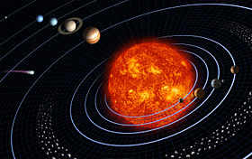
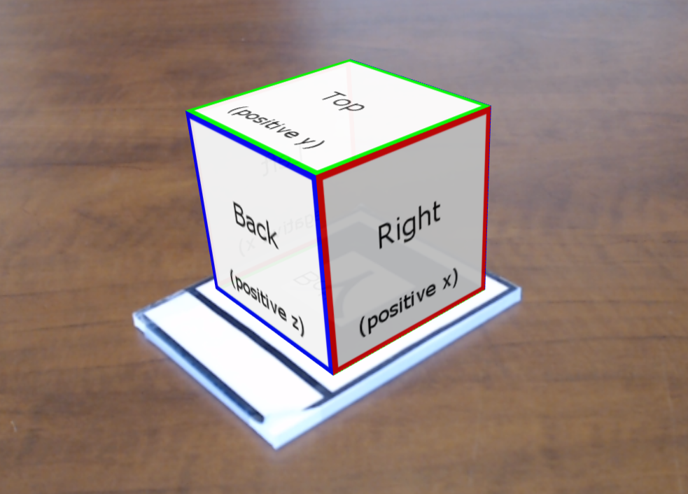
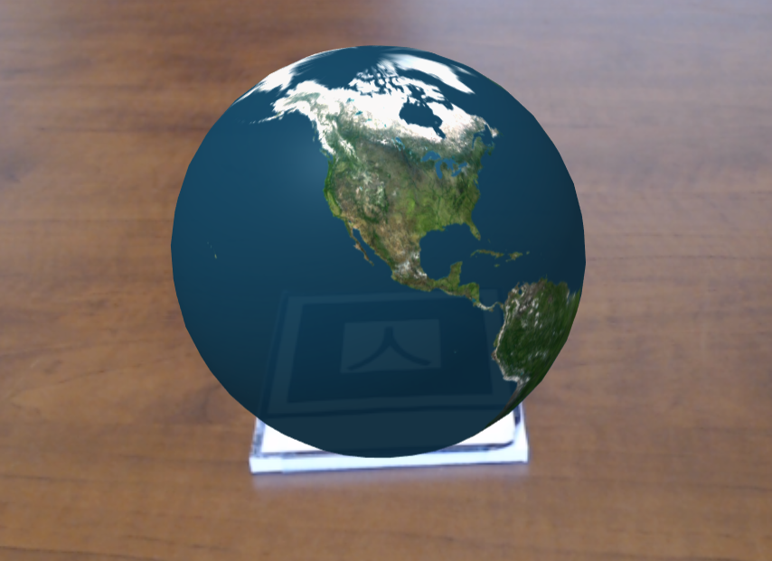
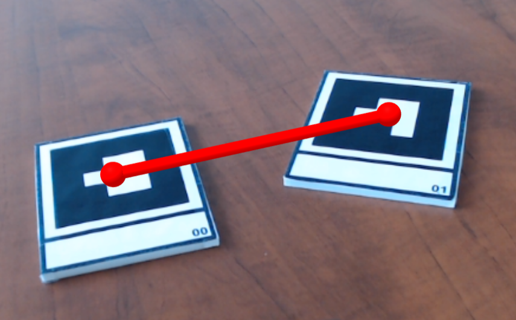

A basic scene that places plain and textured shapes on markers (kanji, barcodes 0/1/2).
| AR.js Marker Training
Pour générer les marqueurs ou déclancheurs. |
| Tyrex en 3D
Avec le marqueur Hiro, un Tyrex en 3D au format gltf. |
| MAXI DINO
16 dinosaures en réalitée augmentée : scan le QR code et découvre la fiche pédagogique. Scan le marqueur et découvre le dinosaure en réalité augmentée |
|  | Les planètes à la bonne place
Avec la réalité augmentée, un marqueur par planète ... il ne reste plus qu'à disposer les planètes à la bonne place. |
|
Hello, AR World!
A basic scene that places plain and textured shapes on markers (kanji, barcodes 0/1/2). |
|  | Multi-Textured Cube
A cube with different images on each side, attached to a marker. |
|  | Animation
Animating (rotating) a globe attached to a marker, using the built-in animation component. |
 |
Text (2D and 3D)
Attaching text to the kanji and hiro markers. |
 |
Particle Effects
Creating a particle system effect, attached to a marker.
|
 |
Canvas Textures
Using an HTML canvas as the texture for a cube; creating an animation ("bouncing block") on the canvas and updating the cube texture. |
 |
Detection
A cube is attached to a kanji marker. Red, yellow, and blue squares are attached to barcode markers 0, 1, and 2. The color of the cube changes depending on which combination of the markers is visible. |
 |
Persistence and Following
A green square is attached to a marker. If the marker is no longer visible, the square turns red and remains in the last known position of the marker. If the marker then becomes visible again, the square turns green and moves (lerps) to the new position. |
 |
Line between two markers
Drawing a line between the centers of barcode markers 0 and 1. (Updates line geometry vertices.) |
|  | Cylinder between two markers
Since lines can be difficult to see, drawing spheres at the centers of barcode markers 0 and 1, and creating a cylinder between the them. (Reorients and rescales the cylinder depending on the distance between the markers.) |